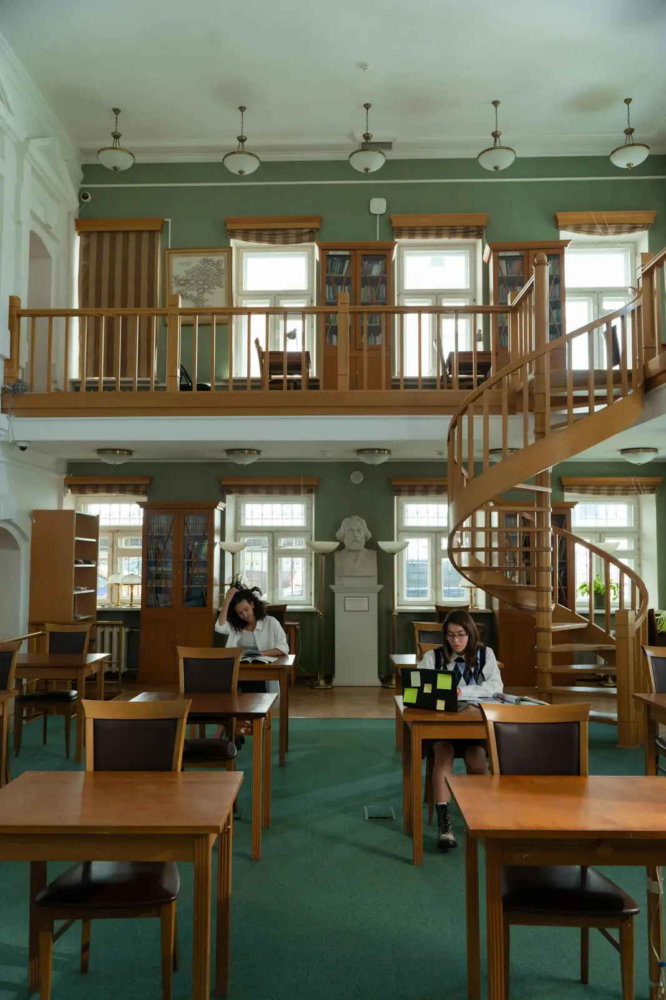

Guides
把首页的申请步骤展开成独立指南页，让家长和学生可以按流程继续了解。
Apply
先阅读学校概况、课程安排、民族文化教育和校园生活介绍。
根据正式招生通知确认报名时间、范围、材料和沟通方式。
参加校园开放、政策说明或面向学生家庭的咨询活动。
所有正式招生条件、收费、资助和学籍信息以官方公告为准。
Next
查看校园开放日与参观方式。
查看政策说明页面。
快速查找报名、开放日和文化活动入口。